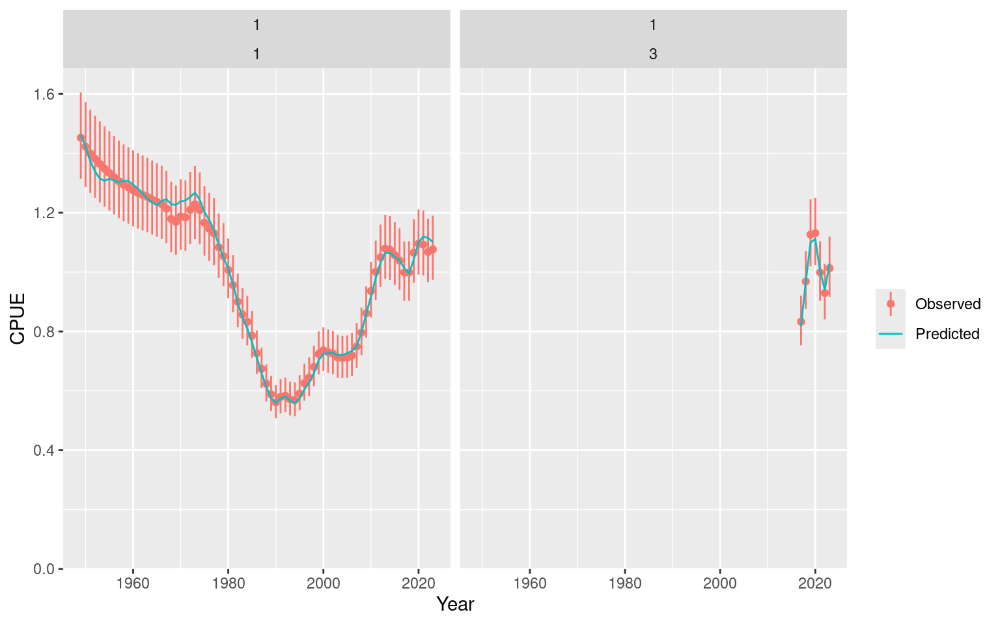

library(opal)
fit_path <- system.file("extdata", "opaka_quickstart_fit.rds", package = "opal")
if (!nzchar(fit_path)) {
stop("The bundled opakapaka quickstart fit is unavailable.", call. = FALSE)
}
fit <- read_opal_fit(fit_path, strict = TRUE, integrity = "portable")
fit
#> <opal_fit>
#> Model: opal_model (schema 1)
#> opal version: 0.0.4
#> Parameters: 127 active
#> Objective: 1832.412
#> Convergence: 0
#> Estimability: All 127 active fixed-effect parameters are estimable.
#> MCMC: not stored
#> Derived sets: 0
#> Created: 2026-09-21 20:58:28 UTC
summary(fit)
#> opal fitted-model summary
#>
#> model model_schema scientific_version opal_version
#> opal_model 1 opal_model_contract_v4 0.0.4
#>
#> Optimization
#> method n_parameters objective convergence message
#> nlminb 127 1832.412 0 relative convergence (4)
#>
#> Estimability: All 127 active fixed-effect parameters are estimable.Review an Opakapaka Fit
Review an opal_fit
This vignette examines the portable fixed-effects opakapaka fit created for the Quickstart. It rebuilds the transient RTMB objective only to obtain model predictions, so no optimisation is performed here.
The bundled fit may have been saved under a different R version. Portable integrity permits that difference while still checking model compatibility and requiring the rebuilt objective to match the saved value.
CPUE fit
object <- opal_fit_object(fit, integrity = "portable")
plot_data <- fit$data
plot_data$cpue_data$season <- 1L
plot_cpue(plot_data, object)
Diagnostics
The compact estimability result and maximum absolute gradient were saved with the fit. They can be inspected without creating a new objective.
list(
estimability = fit$fit$estimability,
maximum_gradient = fit$fit$diagnostics$max_gradient
)
#> $estimability
#> $estimability$status
#> [1] "estimable"
#>
#> $estimability$message
#> [1] "All 127 active fixed-effect parameters are estimable."
#>
#> $estimability$n_parameters
#> [1] 127
#>
#> $estimability$n_non_estimable_combinations
#> [1] 0
#>
#> $estimability$implicated_parameters
#> character(0)
#>
#>
#> $maximum_gradient
#> [1] 0.003773483